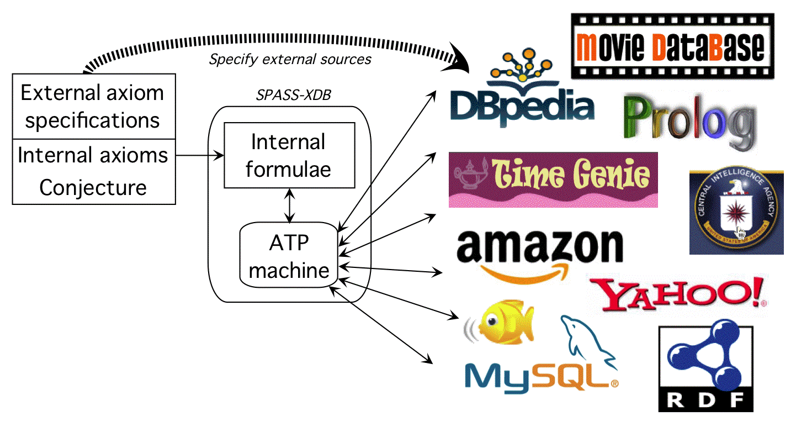

External Axioms

This Work
- Accessing external sources of axioms from ATP
- Axioms not loaded/stored in the ATP system
- Axioms retrieved on demand from external sources
- Further challenges
- Specifying availability of external axioms
- Retrieving and integrating external axioms
- Adapting ATP to axioms arriving during reasoning
SPASS-XDB
- On-demand, asynchronous, retrieval of external axioms for a common
ATP system design
- Unifying syntax and protocols, based on de facto standards (TPTP)
- Implemented in a state-of-the-art ATP system
- Implemented external sources - SQL, SPARQL, Prolog, WWW, Computation
- Testing and deployment to demonstrate capability